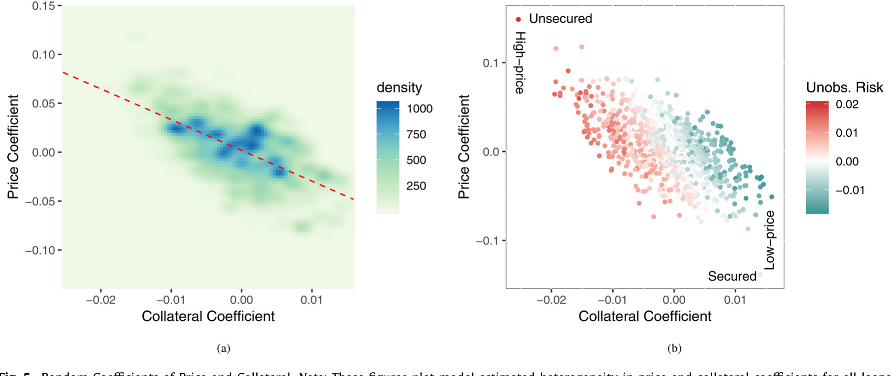
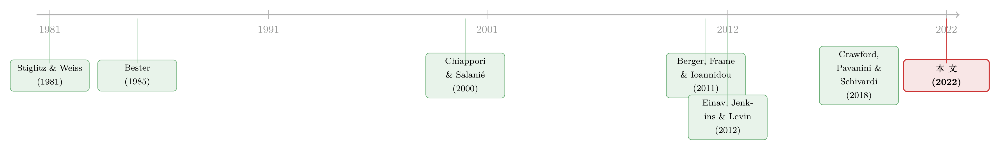

抵押品的两副面孔：当银行同时用「利率」和「担保」给你做体检
本文读的是 Ioannidou, Pavanini & Peng (2022, Journal of Financial Economics)：作者用玻利维亚的征信登记数据，搭起一个把「借款人的信贷需求 + 银行的合约定价 + 企业违约」缝在一起的结构模型，第一次在同一个框架里同时量出了抵押品对 逆向选择 (adverse selection) 与 道德风险 (moral hazard) 的缓解作用——并算清了一旦抵押品价值暴跌 40%，银行究竟是靠「涨价」还是靠「拒贷」来应对。
1 一块抵押品，两本账
先讲一个让理论家头疼了四十年的矛盾。
抵押品到底是好东西还是坏东西？翻开理论文献，你会看到两套几乎相反的叙事。一套说它是好东西：自 Stiglitz and Weiss (1981) 之后，理论界把抵押品当成一种 筛选装置 (screening device)——让借款人「押上身家」，敢押的多半是底子好的，于是银行能借助它把好坏借款人分开（Bester, 1985），又能在事后约束借款人别乱来，缓解道德风险（Boot and Thakor, 1994）。它扩大了借款人的举债能力，让更多人、更便宜、更长期限地拿到信贷。
另一套叙事却说它是放大器：抵押品的价值是顺周期的。经济好的时候，抵押品（厂房、土地、机队）一起升值，信贷随之膨胀；经济一掉头，抵押品贬值，需求和供给同时萎缩，衰退被砸得更深。这条被称作 抵押品渠道 (collateral channel) 的暗线，被认为是大萧条（Bernanke, 1983）和 2007–2009 金融危机（Mian and Sufi, 2011; 2014）背后的主推手之一。
那么，实证上到底是哪一面在起作用？
这里有个一直没被解开的死结。过去的实证文献做得很漂亮，但几乎都是摁住一边、只看另一边：要么找一个外生的抵押品价值冲击，看信贷供给怎么变（Benmelech et al., 2005; Cerqueiro et al., 2016）；要么看抵押品冲击如何传导到企业投资（Chaney et al., 2012; Gan, 2007）和创业（Schmalz et al., 2017）。这些证据都「与理论一致」，可它们没法回答更深的问题：抵押品到底是在缓解事前的逆向选择，还是事后的道德风险？需求和供给这两条腿，各自贡献了多少？两者又是怎么互相喂养的？
这正是本文要补的洞。三位作者（Vasso Ioannidou、Nicola Pavanini、Yushi Peng）的做法，是把成本与收益、需求与供给、事前与事后，全部塞进一个微观结构模型里——然后用它去做一件单靠简化式回归永远做不到的事：把一次抵押品价值的崩盘，拆解成需求、供给、定价、拒贷、违约、银行利润的连锁反应。
2 为什么是玻利维亚
要测信息不对称，你得先找到一个信息不对称真的很严重、而且银行知道的和你（计量经济学家）知道的差不多一样多的市场。听上去矛盾，其实正是本文设定的妙处。
作者用的是玻利维亚公共征信系统 CIRC 的贷款级数据，样本期 1999 年 3 月到 2003 年 12 月。玻利维亚之所以是个好实验室，有两个理由。
首先，这是个信息高度不透明的市场。样本期内既没有私人征信局，绝大多数企业也没有经过审计的财务报表——也就是说，除了征信登记里那点东西，银行对借款人几乎一无所知。这恰恰是结构模型最想要的：它把「银行知道、但计量学家看不到」的那部分信息压到了最小，让模型里的「不可观测项」真的逼近现实里的不可观测项。
接着，一个自然的问题是：会不会有别的制度变化在背后捣乱？也不会。样本期内玻利维亚没有放松管制的浪潮，没有贷款出售和证券化，银行老老实实地在传统的「发起并持有 (originate and hold)」模式下经营——这让模型里假设的银行与借款人激励，能更干净地对上现实。
具体口径上，作者跟着 Berger et al. (2011b) 只看商业银行发放的 定期贷款 (term loans)（分期或一次性偿还），因为这类贷款「有时有担保、有时没有」，正好是理论预言抵押品该发挥作用的地方——而信用卡、透支（永远无担保）和按揭（永远有担保）被剔除掉。最终样本是 12 家商业银行（一半是外资）发给 2,676 家企业的 32,369 笔贷款。更关键的是，作者只盯第一次借款的企业，跟踪其入样后的头 18 个月——因为这些「新面孔」正是信息摩擦最严重、抵押品最该派上用场的群体。
3 模型：把需求、定价、违约缝成一张网
这是全文的发动机，值得一步步拆开看。
需求侧。 借款人 \(i\) 先选一家银行 \(j\)，再在该行选一份合约 \(k\)（有担保 \(s\) 或无担保 \(u\)），并决定借多少。把银行做成有差异的「产品」，借款人对利率 \(r_{jk}\) 和抵押品要求 \(c_{jk}\) 各有自己的脾气。其间接效用可以写成：
注意这里的 \(\alpha_i\) 和 \(\gamma_i\) 都是随机系数 (random coefficients)——每个借款人不一样。但真正关键的一步在于：作者让这两个系数，连同决定借款人是否违约的违约不可观测项 (default unobservable) \(\nu_i\)，服从一个联合分布：
$$(\alpha_i,\ \gamma_i,\ \nu_i)\ \sim\ \mathcal{N}(\mu,\ \Sigma).$$
为什么这一步是命门？因为信息不对称的全部秘密，都藏在这个协方差矩阵 \(\Sigma\) 的几个相关系数里。这正是 Chiappori and Salanié (2000) 和 Einav et al. (2012) 检验信息不对称的思路：把「偏好」和「风险」的不可观测维度放进同一个分布，看它们是否相关。
- 若价格敏感度 \(\alpha_i\) 与违约项 \(\nu_i\) 正相关：越危险的借款人对利率越不敏感、越愿意借——这是逆向选择的指纹。
- 若抵押敏感度 \(\gamma_i\) 与违约项 \(\nu_i\) 负相关：越危险的借款人越「怕」抵押、越不肯要有担保贷款——这正说明抵押品能把好坏借款人筛开，对应事前 (ex ante) 理论。
违约侧。 借款人是否违约由一个潜变量决定，利率越高、违约越多（事后道德风险），抵押品越多、违约越少（抵押约束行为）。利率对违约的因果效应为正、抵押品对违约的因果效应为负，就分别是道德风险和「抵押缓解道德风险」的证据。
供给侧。 银行可以给每个借款人量身定制合约：可以同时报有担保和无担保两种，也可以只报一种、甚至一种都不报（这就是配给/拒贷）。它们在利率上玩 Bertrand-Nash 竞争。对观察上等价的借款人，同一家银行报同样的利率（因为借款人的违约风险对银行也是私人信息中不可观测的那部分）。写出银行针对每个借款人的期望利润函数后，由一阶条件可以反推出银行的边际成本——这一步让我们得以在反事实里重新计算「哪些合约还有利可图」。
把需求、违约、供给三块拼起来，就有了一台能做反事实的机器。
4 识别：先把「看不见的菜单」补出来
结构估计最怕的就是内生性，这里有两道坎。
第一道坎是数据本身缺了一半：我们只看到借款人最终选了的那笔贷款，却看不到他面前整张菜单——其他银行报了什么利率、给不给担保选项。没有菜单，需求模型就无从谈起。作者的解法很巧：利用每个借款人同时和多家银行有借贷关系这一点，用借款人固定效应模型加上倾向得分匹配 (propensity score matching)，把每个借款人可得的合约集合、以及那些「没成交因而看不到」的利率给预测出来。借款人固定效应的好处是，它顺手控制掉了「银行看得到、计量学家看不到」的那部分借款人信息。作者还用样本内外的检验、以及一家欧洲大银行（带有被拒绝的贷款申请）的外部数据，验证了这套预测的准确性。
第二道坎是价格和抵押品的内生性。作者在需求与违约模型里都给出了相应的识别策略来处理。
跨过这两道坎，前面那个协方差矩阵 \(\Sigma\) 的几个相关系数，就成了可以读出来的数。
5 主要结果：抵押品确实在「干两份活」
先看事前那一面。作者估出价格敏感度与违约项的相关系数为 +0.10（显著），证实了逆向选择的存在——越危险的借款人对利率越不敏感，因而越倾向于去借钱。而抵押敏感度与违约项的相关系数为 -0.42（显著）：越危险的借款人对「押东西」越反感，越不愿意要有担保贷款，于是抵押品自然把他们筛了出去。这正是抵押品作为筛选装置的直接证据。
更难得的是，作者还验证了事前理论的一条核心假设——越危险的借款人，其「用抵押品换低利率」的边际替代率 (marginal rate of substitution) 越高。据作者所言，这一假设此前从未被实证检验过。下图把价格系数和抵押品系数的随机分布画了出来，异质性一目了然。

Figure 5: Random Coefficients of Price and Collateral. Note: These figures plot model estimated heterogeneity in price and collateral coefficients for
再看事后那一面。利率对违约有显著的正向因果效应：利率上升 10%，一笔贷款的平均违约概率上升 16.7%——这是道德风险的硬证据。与此相对，抵押品对违约有显著的负向因果效应：押上抵押品，平均能把违约概率降低 27.6%——这说明抵押品确实在约束借款人的事后行为。
一句话：抵押品同时干着两份活，事前当筛子，事后当缰绳。两份活，都被量化了。
6 反事实：抵押品暴跌 40%，银行靠什么活下来？
光把参数估出来还不够。结构模型真正的杀手锏，是它能问一个简化式永远答不了的问题：如果抵押品价值突然掉 40%，会怎样？（这个量级并非夸张——日本资产泡沫破裂时地价两年跌一半，美国次贷危机里 Case-Shiller 20 城房价指数早期跌了约 30%。）
于是反转出现了——答案完全取决于你允许银行怎么应对。
情形一：只许涨价，不许拒贷。 此时银行只能在利率上做文章，结果是利率中位数上升 2.1%、违约概率中位数上升 1.5%、借款人需求中位数下降 4.4%、银行利润下降 5.0%。更糟的是，作者发现：这种情况下，抵押品作为筛选装置基本失效了。
情形二：既能涨价，也能拒贷。 这才贴近现实。结果是 39% 的贷款合约变得无利可图，银行干脆不报了。而正因为能拒贷，银行在利率上的反应反而温和了许多。被拒掉的，多是预期回收率低、信用评级差的借款人。妙就妙在：把那些抵押品被砸得最狠、筛选已经失灵的借款人直接拒之门外，银行就能对剩下那批受冲击较轻、抵押品仍能有效筛选的借款人，继续提供有担保和无担保贷款——于是抵押品的筛选功能几乎被保住，和基准情形一样有效。
这就是本文最漂亮的一笔：定价和配给，是银行应对抵押品冲击的两条腿，而配给恰恰是保住抵押品筛选功能的那条腿。只让银行涨价，等于绑着一条腿走路，抵押品渠道的破坏力会被高估。
在基准情形下，抵押品的筛选有多灵？作者把模型预测的「选有担保贷款的概率」对借款人不可观测风险回归，发现不可观测风险每上升 1 个标准差，选有担保贷款的概率上升 0.5 个百分点。此外还有一条以往文献没碰过的暗线：抵押品冲击会从有担保贷款外溢到无担保贷款的利率上，而且外溢效应的量级，和对有担保贷款利率的直接效应相当。
7 文献脉络
把这篇论文放回它的家谱里，脉络就清楚了。
源头是 Stiglitz and Weiss (1981) 的信贷配给。紧接着，理论家们分头开拓：Bester (1985) 把抵押品做成缓解逆向选择的事前筛选器；Boot and Thakor (1994)、Gale and Hellwig (1985) 则从道德风险、代价高昂的状态验证等角度，论证抵押品如何缓解事后摩擦。另一支宏观文献（Bernanke and Gertler, 1989; Kiyotaki and Moore, 1997）把抵押品做成放大商业周期的「渠道」。

实证这一侧长期被一个难题卡住：借款人的不可观测风险，计量学家通常看不到，也很难和事后摩擦分开。一个罕见的例外是 Berger et al. (2011b)——同样用玻利维亚的数据，借助征信系统里「贷款人看不到、计量学家却看得到」的历史表现来代理借款人私人信息，他们发现两套理论都成立，且事后摩擦在实证上更占主导。
然后，一个新工具进场了。检验信息不对称的结构方法（Chiappori and Salanié, 2000; Einav et al., 2012）让人们能把「偏好」和「风险」的不可观测维度放进同一个分布去识别。本文最近的同门是 Crawford, Pavanini and Schivardi (2018)——他们用结构方法研究意大利无担保授信额度里信息不对称与不完全竞争的互动。本文沿着这条路往前推：同时纳入有担保与无担保贷款，让银行能在利率和抵押品两个维度上筛选，从而第一次把抵押品的事前与事后作用，在一个统一框架里分开量化。（关于结构方法如何给信贷市场的信息不对称「算账」，可参见《大价格扭曲，小福利损失：一场金融科技实验，给「信息不对称」算了笔账》；关于把「逆向选择」嵌进顺序信贷市场的另一种叙事，可参见《钱越来越好借，中间商却越赚越多》。）
而在它落脚的「结构 IO + 金融」这个更大的家族里，邻居们正用同一套工具研究存款竞争、按揭、保险和资产需求（Koijen and Yogo, 2016; 2019）。把银行的关系型放贷整体建成结构模型的努力，也是同一股潮流（参见《银行为什么舍得先亏本拉客？》）。
8 评论与延伸（Q&A + 研究方向）
(a) 几个可能的疑问
Q：玻利维亚一个小国的样本，结论能外推吗？
作者很坦诚：选玻利维亚不是为了代表性，而是为了「干净」——它把银行与计量学家之间的信息差压到了最小，正好让结构模型里的「不可观测项」站得住脚。代价是外部效度有限：在征信体系发达、有评级、有审计报表的市场，信息摩擦小得多，抵押品的事前筛选作用很可能弱于此处估计。这是用外推性换识别力的经典取舍。
Q：「0.10」和「-0.42」这两个相关系数，凭什么解读成逆向选择和筛选？
这正是 Chiappori-Salanié 范式的逻辑：把偏好（价格/抵押敏感度）和风险（违约不可观测项）放进同一联合分布。价格敏感度与风险正相关，意味着危险者更不在乎利率、更爱借钱（逆向选择）；抵押敏感度与风险负相关，意味着危险者更厌恶抵押、自动退出有担保合约（筛选）。识别建立在模型设定上——若你不信联合正态或不信价格预测，结论的解读就会松动。
Q：利率对违约「+16.7%」会不会只是反向因果——危险的人本来就被收高利率？
这正是作者要用识别策略处理的内生性。银行对观察等价的借款人报同样的利率，且利率的外生变动通过供给侧的均衡定价来识别，从而把「高利率→更易违约」的因果方向，与「高风险→被收高利率」的反向通道分开。能否完全信服，取决于你对供给侧设定和价格预测的信任程度。
Q：为什么「拒贷」反而能保住抵押品的筛选功能？这有点反直觉。
抵押品暴跌后，对那些资产被砸得最狠的借款人，押东西已经分不出好坏了——筛选失灵。如果只能涨价，银行只好对所有人一刀切地加价，筛选随之崩塌。但若能拒贷，银行就把这批「筛不动」的人直接踢出菜单，对剩下受冲击较轻、抵押仍管用的人继续放贷，于是整体筛选效率几乎不降。配给在这里不是「副作用」，而是筛选机制的一部分。
Q：这和「抵押溢价」「有担保债发行」那条线是一回事吗？
不完全是。本文关心的是抵押品如何在事前/事后缓解信息摩擦、以及冲击如何在需求供给间传导；而像《未动用的抵押品，是高评级公司留给坏天气的「救生艇」》那条线，更关心抵押品/有担保债的定价与发行时机。两者互补：一个讲「为什么押」，一个讲「押了之后值多少钱」。
Q：把外溢效应也算进来，重要在哪？
重要在它揭示了一个以往被忽略的传导路径：抵押品冲击不只压有担保贷款，还会顺着均衡定价外溢到无担保贷款利率，而且量级相当。这意味着只盯有担保合约去评估抵押品渠道，会系统性地低估它的总冲击。
(b) 几个可能的研究问题与提案
- 把这套框架搬到公司债的「有担保 vs 无担保」上。
- 【经济故事】公司债市场同样存在 senior secured 与 unsecured 的合约选择，发行人对抵押的「厌恶」是否也与其隐性违约风险相关？抵押品（或求偿顺位）在债市里是事前筛选器还是事后缰绳？
-
【可行性】中。需要债券层面的合约条款（担保/顺位）、发行人评级、事后违约与回收数据（如 Moody's DRS、Mergent FISD）。识别难点在于债市没有玻利维亚那样的「信息干净」环境，须额外控制评级与公开信息。
-
外资银行 vs 本土银行，谁更依赖抵押品筛选？
- 【经济故事】本文样本里一半银行是外资。外资行对本地借款人的软信息更少，理应更依赖抵押品这种「硬」筛选工具。把随机系数和筛选有效性按银行所有权拆开，能直接检验「信息劣势→更重抵押」这一假说。
-
【可行性】高。数据已在手（CIRC 含银行身份与所有权），只需在现有结构模型里允许参数随银行类型异质，属于自然扩展。
-
抵押品冲击对流动性的二阶外溢。
- 【经济故事】本文发现冲击会从有担保外溢到无担保利率。一个自然延伸是：当抵押品贬值、银行收紧配给，被拒企业是否转向其他融资渠道、其债务的二级市场流动性如何变化？
-
【可行性】中至低。需要把信贷登记与债券/贷款二级市场交易数据匹配，跨数据集链接是主要障碍，识别也更难。
-
危机期间「定价 vs 配给」的相对权重，是否随宏观状态变化？
- 【经济故事】本文的反事实是静态的 40% 冲击。但在真实衰退里，银行在两条腿之间的取舍可能随资本约束、监管压力而漂移。把反事实做成「状态依赖」的，能回答「什么时候银行更爱拒贷、什么时候更爱涨价」。
- 【可行性】中。需要多个时点/多次冲击的数据来识别状态依赖，玻利维亚单一样本期可能不够，须找有反复冲击的环境。
我的判断。 这篇论文最大的贡献，是把一个争论了四十年、却始终「按住一边看另一边」的问题，第一次放进同一张结构网里——不仅同时检验了抵押品的事前与事后作用，还罕见地验证了「危险者边际替代率更高」这条核心假设，并把一次冲击拆解成定价与配给两条腿。「配给保住筛选」这个发现尤其漂亮，它提醒我们：用简化式或只许银行涨价的反事实去评估抵押品渠道，会系统性高估其破坏力。
对识别，我主要的担忧有两点。其一，整套结论高度依赖结构设定——联合（正态）分布假设、价格预测的准确性、供给侧均衡定价的设定，任何一处松动，那两个关键相关系数的解读都会受牵连；作者用外部数据做了验证，但这终究是结构方法绕不开的软肋。其二是外部效度：玻利维亚的「信息干净」是识别的福音，却也意味着这里估出的抵押品筛选作用，可能是发达征信市场的一个上界。
后续我最想看到的，是把这套框架接到一个有反复、外生抵押品冲击的环境里，让「定价 vs 配给」的权重随宏观状态内生地变动——那将把一个漂亮的静态反事实，升级成对抵押品渠道动态强弱的刻画。
参考文献
- Bester, H. (1985). Screening vs. Rationing in Credit Markets with Imperfect Information. American Economic Review 75(4), 850–855.
- Berger, A. N., Frame, W. S., & Ioannidou, V. (2011b). Tests of ex ante versus ex post theories of collateral using private and public information. Journal of Financial Economics 100(1), 85–97.
- Bernanke, B. (1983). Nonmonetary effects of the financial crisis in the propagation of the Great Depression. American Economic Review 73(3), 257–276.
- Boot, A. W. A., & Thakor, A. V. (1994). Moral hazard and secured lending in an infinitely repeated credit market game. International Economic Review 35(4), 899–920.
- Chaney, T., Sraer, D., & Thesmar, D. (2012). The collateral channel: how real estate shocks affect corporate investment. American Economic Review 102(6), 2381–2409.
- Chiappori, P. A., & Salanié, B. (2000). Testing for asymmetric information in insurance markets. Journal of Political Economy 108(1), 56–78.
- Crawford, G. S., Pavanini, N., & Schivardi, F. (2018). Asymmetric information and imperfect competition in lending markets. American Economic Review 108(7), 1659–1701.
- Einav, L., Jenkins, M., & Levin, J. (2012). Contract pricing in consumer credit markets. Econometrica 80(4), 1387–1432.
- Gale, D., & Hellwig, M. (1985). Incentive-compatible debt contracts: the one-period problem. Review of Economic Studies 52(4), 647–663.
- Ioannidou, V., Pavanini, N., & Peng, Y. (2022). Collateral and asymmetric information in lending markets. Journal of Financial Economics 144(1), 93–121.
- Stiglitz, J., & Weiss, A. (1981). Credit rationing in markets with imperfect information. American Economic Review 71(3), 393–410.